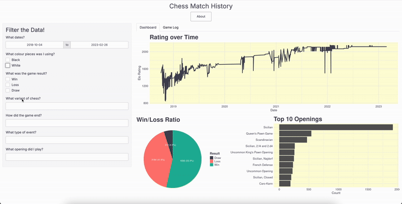

Nicholas Varabioff
About Me

Hello! I’m Nicholas - a data engineer with a Masters of Data Science and a strong background in machine learning, statistics, and data visualization. My technical experience includes designing cloud-based data architectures, building efficient ETL workflows, working with relational databases and SQL, and developing machine learning models.
Outside of work, I’m an active member of the sports community as a runner, triathlete, and hockey fan, and I’m excited by the opportunity to combine my technical skills with my love of sport. I’m actively exploring opportunities in data engineering and ML engineering with a focus on sports analytics. I’m particularly interested in leveraging AI to support performance optimization and strategic decision making.
Feel free to reach out — I’d love to connect with others working in this space!
Education
UBC MDS is a 10-month accelerated data science masters program designed to teach practical data science skills with real-world applications. Throughout the program, I gained hands-on experience in machine learning, statistics, databases, cloud computing, and data visualization.
The program culminated in a two-month long capstone project with Vancouver’s professional Major League Soccer (MLS) team, Vancouver Whitecaps FC. Our project explored how data can optimize strategy for attacking set pieces - specifically free kicks and corners - to deliver actionable insights and inform decision-making in game situations. We delivered statistical models to identify key success factors, a scalable machine learning pipeline accessible behind API endpoints, a comprehensive technical report outlining our methods and findings, and an interactive Streamlit dashboard designed for football analysts to explore data and generate predictions.
I completed the program with a cumulative average of 95.8%. During my time at UBC, I also served as Treasurer for the UBC AMS Triathlon Club, overseeing the club’s budgeting and finances.


I completed a Bachelor of Applied Science (BASc) in Systems Design Engineering at the University of Waterloo. I completed my degree With Distinction, completed a Computing Option and Management Sciences Option, and achieved Term Dean’s Honours List twice. During my 5-year degree, I also completed six 4-month long co-op work experience terms.
While at the University of Waterloo, I represented the school in the Collegiate Chess League (CCL) on the “B” team, placing top 8 in division 2.


Experience
For my capstone project in the last two months of my Master of Data Science degree at UBC, I partnered with Vancouver’s professional Major League Soccer (MLS) team, Vancouver Whitecaps FC. Our project explored how data can optimize strategy for attacking set pieces - specifically free kicks and corners - to deliver actionable insights and inform decision-making in game situations.
We delivered statistical models to identify key success factors, a scalable machine learning pipeline accessible behind API endpoints, a comprehensive technical report outlining our methods and findings, and an interactive Streamlit dashboard designed for football analysts to explore data and generate predictions.


Vivid Seats is a ticket marketplace hosting over 1,000,000 events with 140M+ tickets sold.
At Vivid Seats, my role as a Data Engineer included operational responsibilities such as:
- MySQL relational databases: optimized resource utilization and SQL query performance through indexing and explain plans, performed DDL and DML migrations, monitored database performance with Datadog, AWS Performance Insights, and Cloudwatch.
- AWS infrastructure: orchestrated database version upgrades, used Terraform to manage RDS instance types, replication tasks, autoscaling, custom endpoints, database parameter configurations; optimized performance and minimize costs in stage and production environments.
- Snowflake data warehouse: loaded and backfilled data, maintained and updated table/view hierarchy, resized and provisioned warehouses.
- ETL and data integration: managed Airflow DAG infrastructure for scheduled tasks, integrated with AWS S3 and Snowflake data warehouse, configured Fivetran connectors.
- Techops: configured Jenkins pipelines for automated database migrations, participated in on-call rotation to address critical incidents.


HockeyShot creates hockey training tools including synthetic ice and electronic shooting aids.
As a Software Developer co-op student at HockeyShot, I designed the schema and implemented models on Hive and Firestore databases for a smart shooting tarp application. I also contributed to embedded code in the smart shooting tarp.


emtelligent is a Natural Language Processing company that turns unstructured medical text into structured, actionable data for healthcare organizations.
As a Software Developer co-op student at emtelligent, I built ETL tools in Python and SQL to automate downloading and cleaning of medical ontology data. The data was loaded into MySQL databases and integrated with emtelligent’s natural language processing engine.


Projects
Chess Dashboard
March 2025
For an individual school project, I wanted to visualize the entire history of chess games I have played on the free online chess platform lichess. I created a dashboard using Shiny to visualize my games.



Pokédash: Pokémon Dashboard
March 2025
Created a dashboard using Dash to visualize and analyze Pokémon statistics, as part of a school group project.


Interests
Chess
I started playing chess online during the first year of my Bachelor’s degree at the University of Waterloo. I found it fascinating that such a simple game could have so many possibilities, and it was the perfect mix of problem solving, quick thinking, and competitiveness that I love. I’ve been playing online since then, as well as part of the University of Waterloo’s chess team that competed in the Collegiate Chess League 2022, finishing top 8 in division 2. I have also made this dashboard with Shiny (R) to visualize my games and rating on Lichess from 2018-2023.
Activities
I enjoy staying active through a variety of outdoor activities, including running, cycling, and hiking. I’m also active on Strava, where I track my progress and connect with other athletes!
I’m involved in the community as the treasurer of the UBC AMS Triathlon Club, and I also volunteer at local events, such as the BMO Vancouver marathon when I’ve been unable to participate.